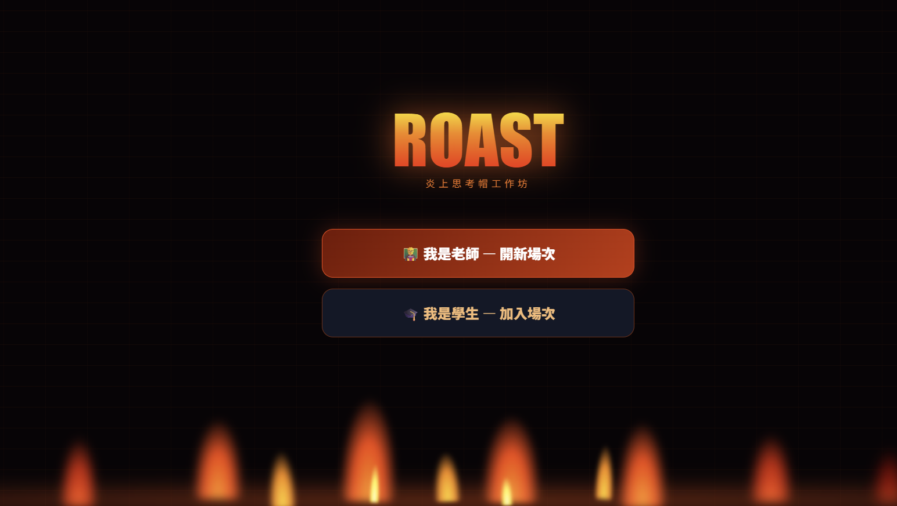
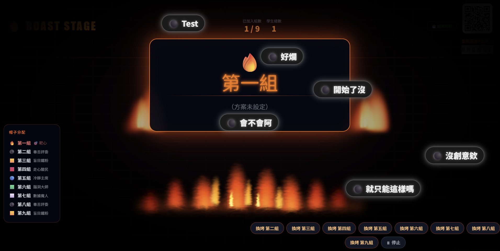
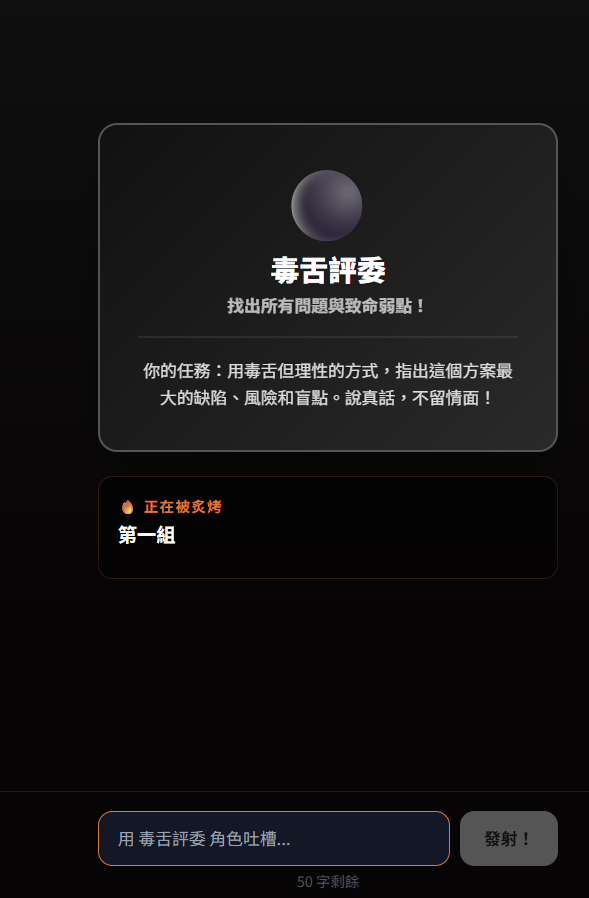

教學遊戲
炎上思考帽
2026.01 · 個人專案

FIG. 11 — 產品主畫面
關於這個作品
以愛德華·德波諾的「六頂思考帽」理論為基礎，設計的課堂互動遊戲。
教師設定討論情境後，學生掃 QR code 加入，被隨機分配帽子角色（白帽事實、紅帽情緒、黑帽批判、黃帽樂觀、綠帽創意、藍帽程序），從自己的角色視角提出論點。
Spotlight 功能讓精彩發言瞬間聚焦在大螢幕；彈幕（Danmaku）讓全班訊息即時飄過畫面，火焰特效視覺呈現討論熱度。Firebase Realtime Database 支撐即時同步。
作品亮點
隨機分配六帽角色，強迫多角度思考
Spotlight 功能：一鍵讓指定發言佔滿大螢幕
彈幕 + 火焰特效，讓討論氛圍真的「炎上」
操作畫面

